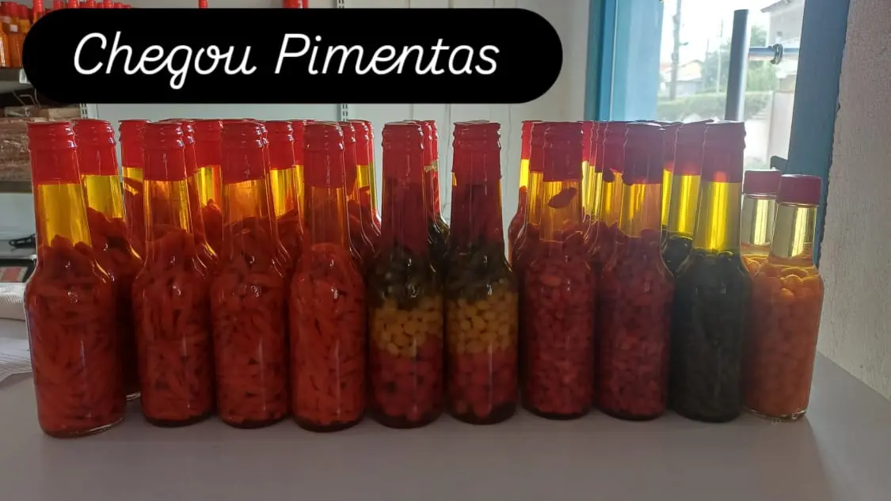

Pimentas Caseiras
Conservas artesanais — Da horta ao pote
Temos diversas opções curtidas no azeite, no vinagre ou puras. Consulte a disponibilidade do dia!
Consultar Pimentas DisponíveisRetire na loja: R. Bom Jardim, 379 — Centro, Cáceres.
Pimentas Caseiras em Conserva: O Ardume Artesanal que Transforma Qualquer Prato
Nas cozinhas do interior de Mato Grosso e nas mesas à beira do Rio Paraguai, a pimenta em conserva não é um acompanhamento opcional — é parte integrante da refeição. Um caldo de piranha sem pimenta, um peixe frito sem a cumari no vinagre ao lado, um feijão sem o toque da malagueta: esses seriam pratos incompletos para qualquer cozinheiro pantaneiro de respeito. As Pimentas Caseiras da Peixaria Rio Paraguai nascem desse entendimento: são conservas artesanais produzidas com pimentas cultivadas sem agrotóxicos, curtidas no tempo certo e embaladas em potes de vidro que preservam cada nuance de sabor e ardume.
As Variedades: Cada Pimenta com Sua Personalidade
Cultivamos e trabalhamos com quatro variedades de pimenta, cada uma com características únicas:
- Cumari: Pequena, arredondada, com ardume médio e sabor levemente frutado. A mais tradicional nas conservas pantaneiras — acompanha peixe frito, feijão e caldos com intensidade equilibrada que não machuca nem quem não está acostumado.
- Bode: De formato oval e coloração verde a amarela-alaranjada, a bode tem ardume mais pronunciado que a cumari e sabor muito característico. Favorita dos amantes de pimenta de verdade.
- Malagueta: Fina, comprida e extremamente ardida. Em conserva de azeite ou no vinagre, é o ingrediente que transforma um simples caldo em uma experiência gastronômica intensa.
- Dedo-de-Moça: Mais suave em ardume, com sabor adocicado e polpudo. Excelente para temperar sem agredir — ideal para quem aprecia pimenta com moderação.
O Processo de Curtimento: 15 Dias de Paciência
Cada pote é preparado manualmente. As pimentas são colhidas no ponto ideal de maturação, lavadas, secas e arrumadas com cuidado nos vidros esterilizados. A escolha do líquido de conservação define o caráter final do produto: vinagre de álcool para a versão clássica, que realça o ardume e entrega aquela acidez que corta a gordura do peixe frito; azeite de oliva extravirgem para a versão mais suave e aromática, perfeita para regar pizzas, bruschetas e queijo; ou o suco de fermentação natural das próprias pimentas, para os apreciadores de sabores fermentados e intensos. Após o fechamento, os potes descansam por pelo menos 15 dias antes de serem comercializados.
O Par Perfeito para os Pratos Pantaneiros
Não existe peixe frito completo sem uma boa pimenta ao lado. A cumari no vinagre é o acompanhamento clássico para o pintado na chapa ou o pacu frito. O caldo de piranha fumegante ganha uma dimensão completamente nova com algumas gotas da conserva de azeite. E o churrasco de porco caipira fica ainda mais especial com a malagueta ao lado. Disponíveis em potes individuais, as Pimentas Caseiras também fazem sucesso como presente gastronômico. Encomende pelo WhatsApp e retire na loja em Cáceres-MT.